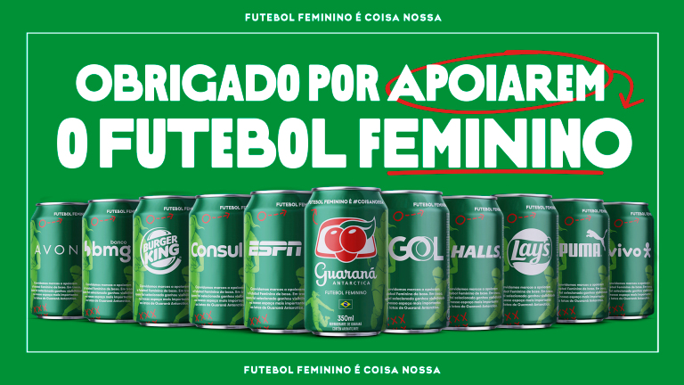

COMO
COMO
REFRESCA
Tradição no almoço de familia, churrasco e aniversários. Quem é brasileiro sabe que Guaraná acompanha diferentes fases da nossa trajetória.

GUARANA
ZERO
Tem tanto sabor de Guaraná Antarctica que nem parece zero. O sabor que os brasileiros tanto amam, só que sem açúcares e zero calorias.
COMPRARGUARANA
NATU
Natu é feito com ingredientes 100% naturais, sem conservantes e corantes artificiais, 0% de sódio e nenhuma adição de açúcares ou adoçantes. Tudo isso sem perder o sabor de Guaraná Antarctica que você já ama.
COMPRARGUARANA
ANTARTICA
O clássico dos clássicos, combina com tudo! Da pipoca à coxinha, do hamburgão ao acarajé.
COMPRAR